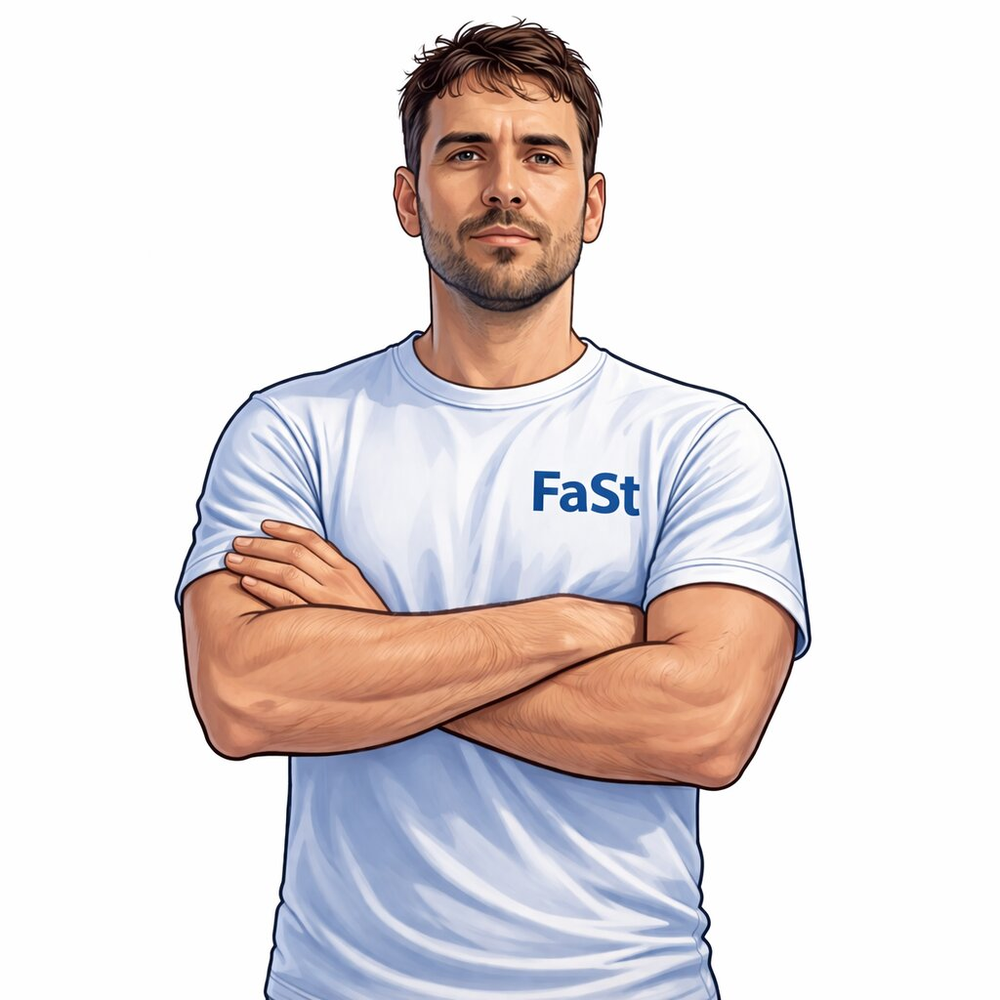
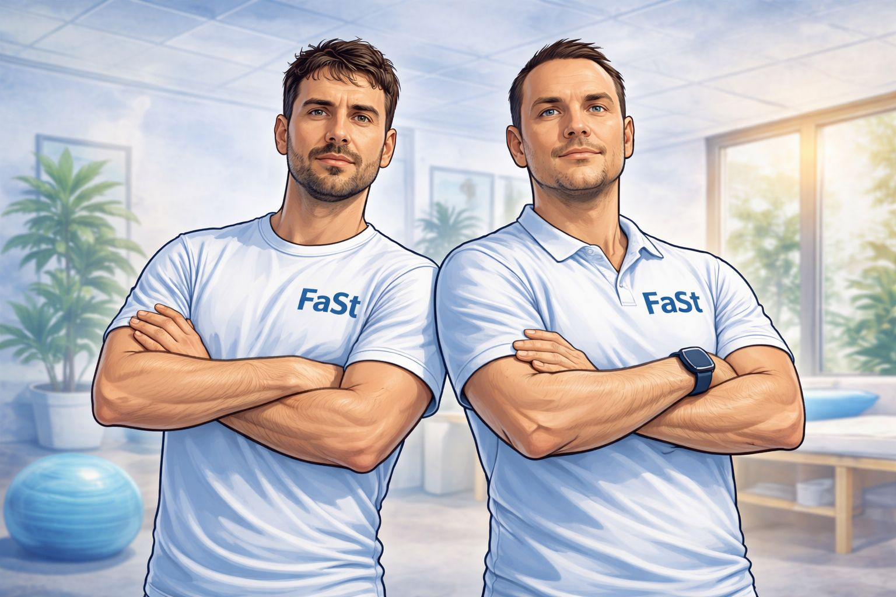
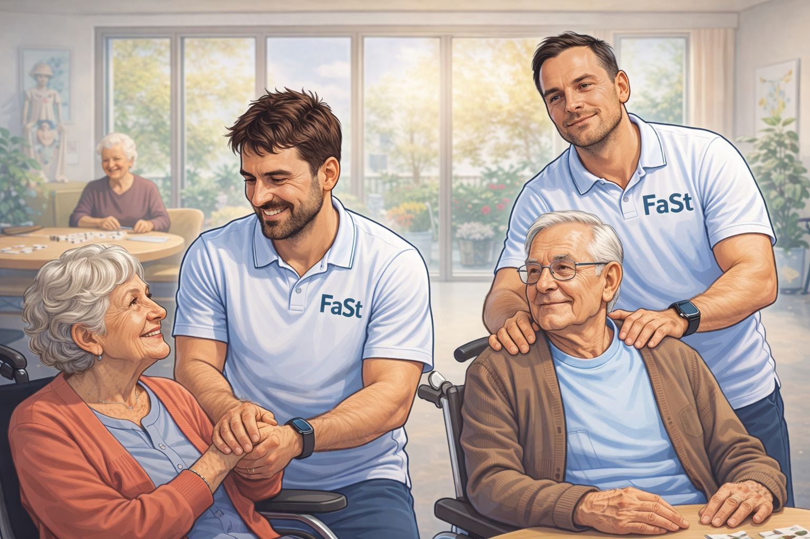
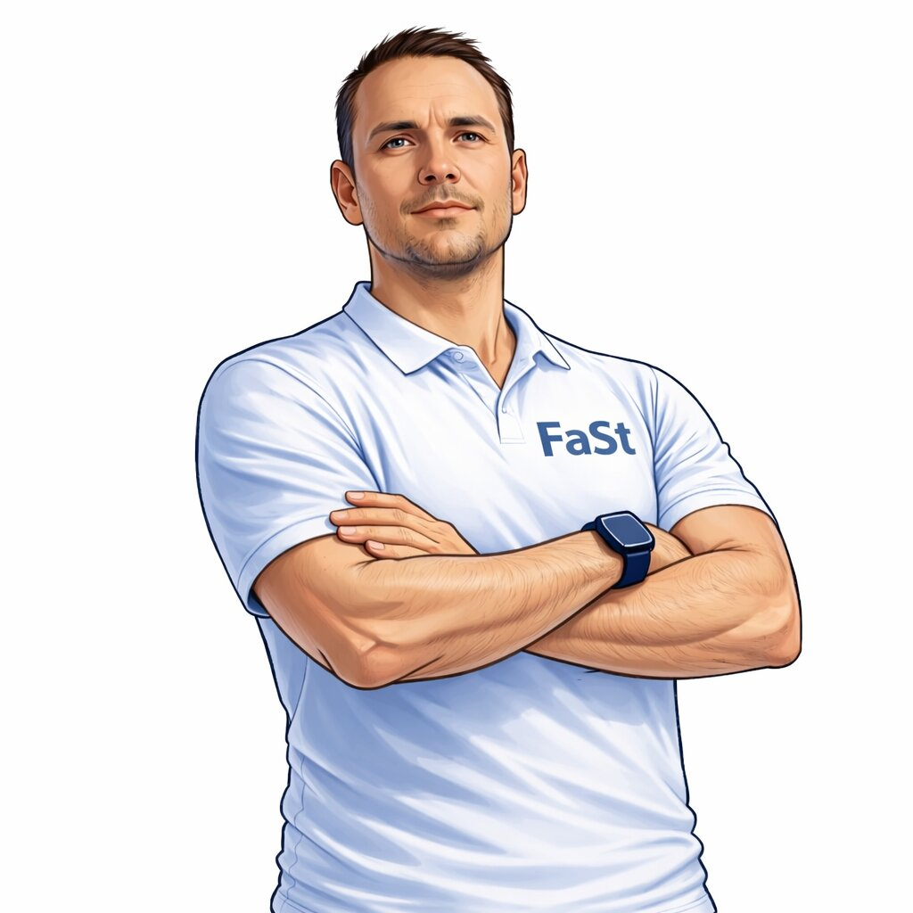

Bild Matthias
Matthias
Praxisinhaber
Fokus auf nachhaltige Behandlung komplexer Beschwerden und individuelle Therapiekonzepte.
FaSt schafft klare Abläufe, feste Ansprechpartner und eine verlässliche therapeutische Versorgung direkt vor Ort. So entsteht Planbarkeit für Einrichtung, Pflege und Bewohner.

FaSt übernimmt die physiotherapeutische Versorgung in sozialen Einrichtungen.
Von der Rezeptorganisation bis zur kontinuierlichen Betreuung der Bewohner.
Klare Abläufe. Feste Ansprechpartner. Kein Koordinationsaufwand für Ihre Einrichtung.
Teilen Sie uns Ihren Bedarf unverbindlich mit.
Eigenständig arbeiten. Mit klarer Unterstützung im Hintergrund.
Ein Arbeitsumfeld mit Struktur, in dem du deinen Alltag selbst gestaltest.
Erfahre hier, was FaSt dir bieten kann und wie dein Arbeitsalltag aussehen könnte.
Teilen Sie uns Ihren aktuellen Bedarf an physiotherapeutischer Betreuung mit. Wir setzen uns zeitnah mit Ihnen in Verbindung.
Erfahre hier, was FaSt dir als Therapeut bieten kann und wie dein Arbeitsalltag aussehen kann.
Mit wenigen Angaben helfen Sie uns, den Bedarf in Ihrer Einrichtung einzuschätzen. Wir melden uns zeitnah.
Wie hoch schätzen Sie den Bedarf an Physiotherapie für Ihre Bewohner ein?
Wie können wir Sie am besten erreichen? Uns erreichen Sie unter der E-Mail: info@physio-fast.de
Kannst du dir vorstellen, ausschließlich in sozialen Einrichtungen zu arbeiten?
(z. B. Pflegeheime, Tagespflege, Lebenshilfe, Intensivpflege-WGs, usw.)
Kannst du dir vorstellen, deinen Therapiealltag weitgehend selbst zu strukturieren?
Bei FaSt arbeitest du eigenständig, mit klarer Organisation und festen Ansprechpartnern im Hintergrund.
Hast du Zusatzqualifikationen? (optional)
Zusatzqualifikationen sind kein Muss.
Sieh auf Basis deiner Angaben, welches Gehalt im FaSt-Modell möglich sein kann.
Wenn das Modell grundsätzlich zu dir passt, trag hier kurz deine Kontaktdaten ein. Oder schreib uns direkt an info@physio-fast.de

Wir sind eine langjährig bestehende Praxis aus Ingolstadt. Seit März 2025 haben wir mit der Physiotherapie FaSt eine spezialisierte Abteilung aufgebaut, die neue Wege in der Versorgung sozialer Einrichtungen geht. Denn wir haben festgestellt, dass ein hoher Therapie Bedarf bei den Einrichtungen herrscht. Gleichzeitig stoßen klassische Praxismodelle häufig an ihre Grenzen, organistaroisch wie kapazitativ.
Unsere Therapeut:innen arbeiten ausschließlich vor Ort in Pflegeheimen, Tagespflegen, Lebenshilfeeinrichtungen, Intensivpflege-WGs und vergleichbaren sozialen Einrichtungen. Wir kommen direkt in die Einrichtung mit klaren Abläufen, festen Ansprechpartneren und einer langfristigen, planbaren Versorgung.
Ein erfahrenes Team, spezialisiert auf die physiotherapeutische Versorgung in sozialen Einrichtungen.

Fokus auf nachhaltige Behandlung komplexer Beschwerden und individuelle Therapiekonzepte.

Verantwortlich für Organisation, Struktur und die therapeutische Betreuung vor Ort. Ansprechpartner für Einrichtungen und Therapeuten.
Schwerpunkt auf funktioneller Verbesserung und Unterstützung im Alltag.
Fokus auf sichere Mobilisation und Erhalt der Selbstständigkeit.
Fokus auf individuelle Therapieplanung und alltagsnahe Umsetzung im gewohnten Umfeld.
Behandlung mit Fokus auf alltagsnahe Bewegungsabläufe und Stabilität.
Strukturierte Therapie mit Fokus auf Kräftigung und Stabilität.
Aktivierende Therapie zur Förderung von Beweglichkeit und Kraft.

Fokus auf langfristige Fortschritte und stabile Behandlungsergebnisse.
Nutzen Sie das Formular, wir melden uns zeitnah zurück. Oder schreiben Sie uns eine E-Mail: info@physio-fast.de